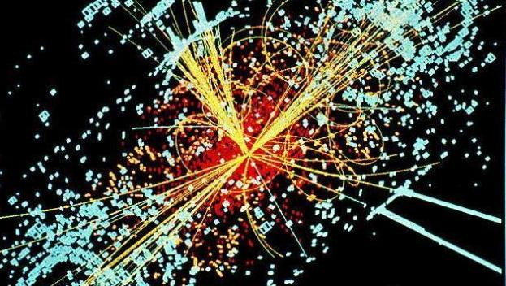
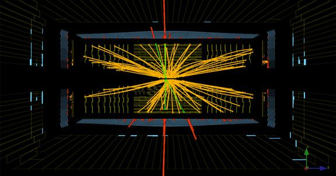

|
|
|
The God's Particle or Higgs boson
| |
The Higgs boson or God's particle as it is also known, is a boson elementary particle predicted by the Model Particle Pattern, theoretically emerged shortly after the Big Bang hypothetical predicted massive scale to validate the current standard model of particles and provisionally confirmed in March 14 2013. It Represents the key to explain the origin of mass of other elementary particles. All known and projected particles are divided into two classes: fermions (particles with spin half of an odd number) and bosons (particles with integer spin).
|  An understanding of the physical phenomena that causes certain elementary particles to have mass and there is a difference between the electromagnetic forces (which interaction is carried by photons), and the weak force (which interaction is made by bosons W and Z) are critical in many ways the structure of microscopic and macroscopic matter; so if it exists, the Higgs boson will have a huge effect on the understanding of the world around us. The Higgs boson was first predicted in 1964 by British physicist Peter Higgs, the work of Philip Anderson ideas. However, since there was no technological conditions to seek the possible existence of the Higgs to the operation of the Large Hadron Collider (LHC) in mid 2008. The energy band boson search was narrowed and, in December 2011, energy limits are among the bands 116-130 GeV, according to the ATLAS team, and between 115 and 127 GeV according to CMS. On July 4, 2012, it was announced that an unknown particle and mass between 125 and 127 GeV / c2 was detected; physicists suspected at the time that it was the Higgs boson.  In March 2013, it was proved that the particle acted, interacted and decayed according to the various predicted forms of the Standard Model, and provisionally prove that it had positive parity and spin zero, two fundamental attributes for the Higgs boson, strongly indicating the existence of the particle. God's particleOutside the scientific community, is best known as the God particle (the original God's particle) due to the fact that this particle allow others to have different masses - however, the literary translation of the English would be "particle-God."  According to the Brazilian physicist Marcelo Gleiser, the title came with the book of another physicist Leon Lederman, who proposed to the publisher the title Goddamn particle (damn particle), which has no connection with God, and serve to demonstrate their frustration at not having found the Higgs boson. But Lederman was persuaded to accept the change for commercial reasons. Comfirmation - June 22, 2015Washington (AP) - Physicists in Italy said Wednesday that are very close to completing what they thought last year was the Higgs boson particle code name, and also known as the "God's particle." They just need to eliminate one more last remote possibility that found it would be something different.The long theorized and sought subatomic particle could explain why matter has mass, and so it is called the Achilles heel of Physicists. With the new analysis, scientists are very close to sure they found the Higgs boson particle. But they want to be 99.9% certain and positive about such an important announcement, said Pauline Gagnon, a physical of the European Centre for Nuclear Research. In July last year, scientists working with the most overwhelming Colider of atoms in the world, called the "Hadron Colider" with construction cost of $ 10 billion dollars which straddles the border between France and Switzerland, announced they have found a particle that described similar to Higgs boson without confirming with certainty. Now after thousands of tests performed show that they are very close to be able to say that for sure. "Every test, looks more and more with the Higgs boson particle," Gagnon said after presenting a report of the latest research done on Wednesday at a conference in the Italian Alps. Gagnon, compared to find Higgs boson particle, as searching the identification of a person. What they found looks, speaks and still sings like a Higgs boson particle, but scientists want to make sure that what we found also dance as the Higgs boson particle, before yelling "Eureka" She said that there is only one doubt about the particle they found that it could be a: Graviton. This is another subatomic particle associated with gravitational fields, not mass. Analyzing the turning of Particle, scientists will be able to tell if what they found is the Higgs boson particle, which is closer to being confirmed or a particle Graviton. In the presentation of last Wednesday, was attended by a team of researchers from many who are engaged in that search, and next week another team of researchers will present their findings. Physicist Sean Carroll of the California Institute of Technology, who is not involved in the research, said scientists are just being very careful and covering all the possible bases before stating anything. Without the Higgs boson particle, to explain why electrons and matter in general has mass, Carrol said: "There would be no atoms, no chemistry, life would not exist, that is the importance of this particle". Follow news Online: public.web.cern.ch/public ___ Seth Borenstein can be followed at: twitter.com/borenbears |